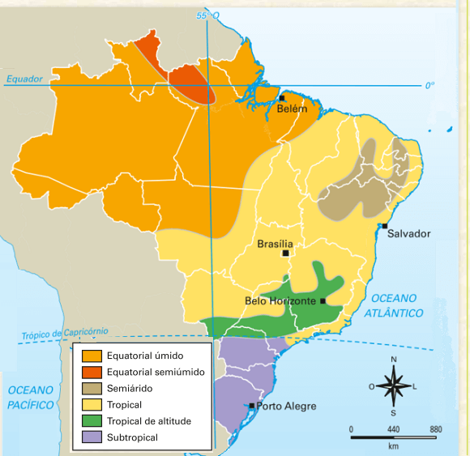
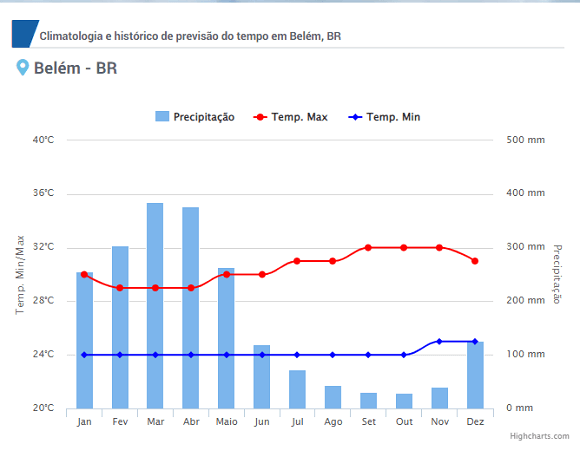
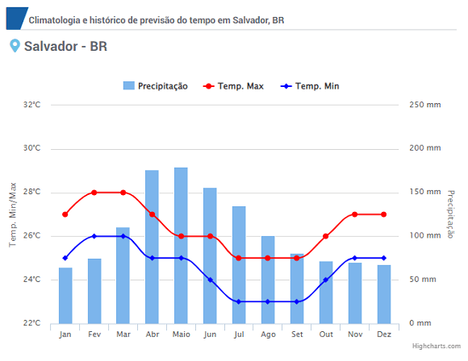
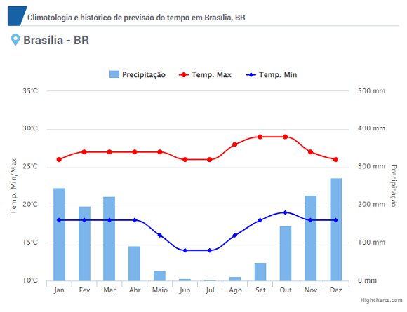
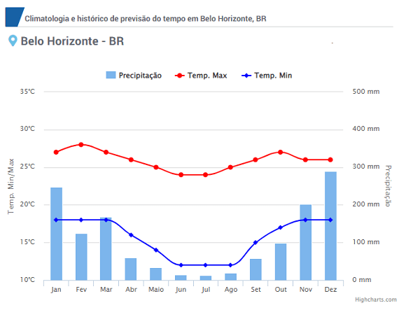
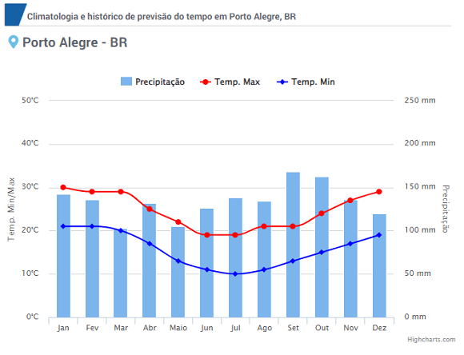

Conteúdo: Clima; Tempo; Tipos de Clima: Equatorial, tropical, subtropical, tropical de
altitude, tropical úmido, tropical semiárido. Climogramas.
Objetivo: Identificar e localizar os principais climas do Brasil. Equatorial, tropical,
tropical úmido (litorâneo), tropical de altitude, tropical semiárido, subtropical.
Digite seu nome
Introdução
Na aula anterior, mergulhamos no conhecimento sobre as principais fontes
de energia não renováveis existentes no nosso país, explorando o petróleo, o carvão mineral e o gás natural.
Hoje, vamos aprofundar nosso entendimento sobre o nosso território e com uma outra característica
fundamental: o clima.
O Brasil possui uma variedade de tipos de climas, desde o tropical ao equatorial e subtropical, vamos
descobrir quais fatores influenciam a configuração climática do Brasil. Além disso, vamos ver como o clima
influencia a vida das pessoas, a economia e o meio ambiente.
Quem sabe, podemos descobrir por que o Rio de Janeiro é tão quente mesmo no inverno ou por que o Sertão
nordestino é tão seco.
Questões para serem respondidas no caderno sobre o tema da aula de hoje:
1. Explique a diferença entre clima e tempo.
2. Descreva as características principais do clima equatorial no Brasil.
3. Quais são as principais características do clima tropical e onde ele é predominante no Brasil?
4. Como o clima subtropical se diferencia dos outros climas brasileiros e onde ele ocorre?
5. Explique as características do clima tropical de altitude e a sua localização no Brasil.
6. O que caracteriza o clima tropical úmido (litorâneo) e em que regiões do Brasil ele é encontrado?
7. Descreva as condições climáticas típicas do clima tropical semiárido e os desafios que ele impõe.
8. O que são climogramas e como eles podem ser utilizados para estudar os climas no Brasil?
9. Identifique os fatores que influenciam a diversidade climática no Brasil.
10. Localize e descreva as principais áreas onde o clima tropical úmido é predominante no Brasil.
Slide 1: Introdução aos Climas do Brasil
O Brasil é um país de dimensões continentais.
Apresenta grande variedade climática devido à sua extensão territorial.
Fatores como latitude, relevo, proximidade do mar e massas de ar influenciam os climas regionais.

Fonte: BEN (2023).
Slide 2: Fatores que Influenciam o Clima no Brasil
Latitude: Proximidade do Equador influencia temperaturas elevadas.
Relevo: Altitude e topografia afetam temperatura e precipitação.
Continentalidade e Maritimidade: Proximidade do oceano ou interior do continente modula a umidade e amplitude térmica.
Massas de Ar: Dinâmica das massas de ar (tropical, polar, equatorial) influencia precipitação e temperatura.
Slide 3: Clima Equatorial
Localização: Região Norte, especialmente na Amazônia.
Características:
Altas temperaturas médias (25-27°C).
Elevada umidade e chuvas abundantes durante todo o ano.
Pequena amplitude térmica anual.
Slide 4: Clima Tropical
Localização: Centro-Oeste, Sudeste, e parte do Nordeste.
Características:
Estações bem definidas: uma chuvosa (verão) e outra seca (inverno).
Temperaturas médias elevadas (20-28°C).
Pluviosidade variada, dependendo da região.
Slide 5: Clima Tropical de Altitude
Localização: Áreas elevadas do Sudeste (MG, SP, RJ).
Características:
Invernos mais frios, com médias de 18-22°C.
Verões amenos, com chuvas concentradas.
Influência da altitude modera as temperaturas.
Slide 6: Clima Semiárido
Localização: Sertão Nordestino.
Características:
Baixa pluviosidade (300-800 mm/ano).
Longos períodos de seca e alta evaporação.
Temperaturas elevadas (média de 27-29°C).
Slide 7: Clima Subtropical
Localização: Região Sul (RS, SC, PR).
Características:
Verões quentes e invernos frios, com geadas frequentes.
Chuvas bem distribuídas ao longo do ano.
Maior amplitude térmica anual.
Slide 8: Clima Litorâneo Úmido
Localização: Faixa litorânea do Sudeste ao Nordeste.
Características:
Alta umidade e chuvas constantes.
Temperaturas amenas, moderadas pela influência do oceano.
Pequena amplitude térmica anual.
Slide 9: Clima de Transição
Localização: Áreas entre o tropical e semiárido, e entre o equatorial e subtropical.
Características:
Mescla características dos climas adjacentes.
Variação na intensidade das chuvas e temperatura.
Slide 10: Impactos Climáticos na Economia e Cultura
Agricultura: Diversidade climática favorece a produção de diversas culturas.
Turismo: Climas variados atraem diferentes tipos de turistas.
Saúde: Clima influencia a qualidade de vida e bem-estar da população.
Slide 11: Considerações Finais
A diversidade climática do Brasil reflete sua complexidade geográfica.
Entendimento dos climas é essencial para planejamento econômico e ambiental.
Mudanças climáticas podem alterar padrões estabelecidos, exigindo adaptação.
Duvid - Podcast
Aventuras climáticas pelo Brasil: a jornada do ganhador do concurso de redação
Duvid:
Olá e bem-vindos ao Duvid Podcast! Hoje vamos entrevistar o ganhador do concurso de redação sobre o Brasil.
Um estudante do ensino médio que escreveu sobre a diversidade climática no país e ganhou o prêmio de
participar de uma expedição para conhecer as diferentes regiões do Brasil. Acompanhado por geógrafos
renomados, esse jovem teve a oportunidade única de vivenciar de perto as características climáticas de cada
região e aprender sobre a importância do clima para a paisagem e a vida na terra. Então, vamos ouvir sobre
essa incrível jornada e como foi participar desse projeto para o ganhador do concurso.
Hoje, estamos aqui com dois convidados muito especiais. Temos o geógrafo, Dr. Silva, e seu aprendiz de
geógrafo, aluno de ensino médio Pedro. Eles viajaram por todas as regiões do Brasil, estudando a relação
entre o clima e a diversidade de paisagens. Dr. Silva e Pedro, muito obrigado por se juntarem a nós hoje.
Prof. Silva:
Prazer em estar aqui, Duvid. Podem me chamar apenas de Silva se preferir.
Pedrinho:
E ai pessoal, muito feliz por estar aqui. Me chame de Pedrinho, é como estou acostumado.
Duvid:
Claro pessoal, como quiserem. Prof. Silva e Pedrinho. Para começarmos, Professor, gostaria de perguntar
sobre esse projeto. Vocês viajaram por todas as regiões do Brasil, certo? Qual foi o objetivo do Projeto?
Prof. Silva:
Sim, viajamos. O Brasil é imenso é mesmo no período atual ainda há lugares pouco estudados. Esse projeto
chamado: “Conhecer o Brasil, fortalecer a Cidadania”, envolveu uma série de instituições governamentais,
além de escolas de todo o pais. Na atualidade, a questão climática está sendo muito discutida no noticiário,
na internet, no Youtube e Podcast pelo mundo afora. Queríamos ter uma compreensão completa da relação entre
o clima e a diversidade de paisagens no Brasil.
Duvid:
Então Pedrinho, você ganhou um concurso de redação sobre o Brasil e o prêmio foi participar de uma expedição
para conhecer as regiões brasileiras e seus climas, como você se sentiu ao receber essa notícia?
Pedrinho:
Eu fiquei muito animado e surpreso quando soube que ganhei o concurso. Participar de uma expedição para
conhecer as regiões brasileiras é algo que eu sempre sonhei, e ter a oportunidade de viver isso é incrível.
Duvid:
E como você se preparou para o concurso de redação?
Pedrinho:
Eu estudei muito sobre o clima no Brasil e as regiões que abrangem cada tipo de clima. Além disso, eu
assisti ao podcast "Duvid Podcast" que foi fundamental para aprimorar meus conhecimentos. Eu também
pesquisei sobre a biodiversidade e os impactos do clima na vida das pessoas nas diferentes regiões. Também
prestei muita atenção nas aulas de Português para estruturar bem minha redação de acordo com argumentos
conectados uns com os outros. Tudo isso me ajudou a escrever a minha redação e a me preparar para essa
expedição.
Duvid:
Antes de começar as perguntas sobre a expedição em geral, precisamos lembrar aos ouvintes e leitores (esse e
outros episódios estão disponíveis em nosso site: https://www.duvid.com.br/. Confiram lá pessoal e baixem os
aplicativos que são gratuitos e não precisam de conexão com a internet. Sabemos que nem todos têm acesso
ainda a internet, principalmente em regiões mais remotas).
Prof. Silva, vamos falar sobre o clima, o tempo, as regiões, mas eu mesmo, e acho que grande parte da nossa
audiência também não se lembra desses conceitos. Poderia resumir para relembramos esses conceitos?
Prof. Silva:
Claro e ainda vou mais longe. Não gosto muito de utilizar linguagem técnica de forma exagerada como se a
Ciência fosse algo de outro mundo.
Vamos lembrar que o clima é o padrão das condições atmosféricas de uma região ao longo do tempo. Já o tempo é
a condição atmosférica em um momento específico.
O que quer dizer isso? Imagine que o clima é como o estilo de moda de uma pessoa. Assim como o estilo de moda
é uma característica duradoura e distinta de uma pessoa, o clima é uma característica duradoura e distinta
de uma região.
Agora, o tempo é como a roupa que uma pessoa escolhe vestir todos os dias. Cada dia pode ser diferente, mas
ao longo do tempo, o estilo de moda prevalece. Da mesma forma, cada dia pode ter condições climáticas
diferentes, mas ao longo do tempo, o clima prevalece.
Em resumo, clima é o padrão, enquanto o tempo é a condição momentânea. Mas lembre-se, assim como uma pessoa
pode mudar de roupa para se adequar às condições, a natureza também pode responder às condições climáticas e
temporárias. Então, devemos manter sempre os olhos bem abertos e observar essas as mudanças, que ocorrem
cada vez mais rápido.
Duvid:
Muito bom prof., gostei muito dessa analogia entre a moda e o clima. Quer dizer que as vezes mudar o tipo de
roupa, não necessariamente significa mudar todo o meu estilo.
Prof. Silva:
Isso mesmo, as vezes estamos nos adaptando ou passando por uma outra fase e, logo, voltamos ao nosso estado
regular ou nosso padrão.
Duvid:
E o que vocês descobriram com toda essa verdadeira Jornada Geográfica?
Prof. Silva:
Descobrimos que o clima está diretamente ligado à diversidade de paisagens no Brasil. O clima influencia na
vegetação, na presença de rios, na topografia, entre outros aspectos. Quer dizer, tem muitos fatores que
determinam vários tipos de clima.
Duvid:
Isso é incrível. Quais seriam esses fatores?
Prof. Silva: Bem, pessoal, como vocês já sabem, o Brasil é um país de dimensões continentais
e tem uma grande
variedade de climas. Isso se deve a vários fatores, incluindo a configuração geográfica do país, a
maritimidade e a continentalidade, as modestas altitudes, a extensão territorial e as formas do relevo. Além
disso, as dinâmicas das massas de ar e frentes também desempenham um papel importante na definição dos
climas do Brasil. E não podemos esquecer do impacto da vegetação e das atividades humanas, que também
contribuem para as particularidades climáticas regionais e locais do país.
Duvid: E é justamente essa variedade de climas que torna o Brasil um lugar incrível para se
conhecer e
explorar. Imagine só, você pode estar em uma praia tropical em um momento e, em seguida, em uma região
montanhosa de clima temperado. Incrível, não é? E é isso que o nosso convidado especial, o vencedor do
concurso de redação, pôde experimentar durante sua expedição por várias regiões brasileiras. Vamos ouvir
suas impressões agora! Conta mais pra gente ai Pedrinho.
Pedrinho: Eu não fazia ideia de que estar próximo ao mar ou ao continente fazia tanta
diferença no clima de
uma cidade. A gente pode comparar Recife com Brasília. Recife é uma cidade localizada na beira-mar, então
ela tem uma forte influência marítima. Isso quer dizer que o clima lá é bem mais ameno, com temperaturas
mais suaves e uma umidade maior. Já Brasília é uma cidade bem mais afastada do mar, no interior do país,
então ela tem uma forte influência continental. Isso faz com que o clima lá seja mais quente e seco.
Além disso, as diferenças entre as duas cidades também vão além da temperatura e da umidade. A gente pode
observar diferenças na quantidade de chuvas, na velocidade e direção dos ventos, enfim, vários aspectos
climáticos são influenciados pela maritimidade ou pela continentalidade. Legal, né? Quem diria que estar
perto ou longe do mar faz tanta diferença no clima de uma cidade.
Duvid: Prof., quais outros fatores interferem no clima de uma região?
Prof. Silva: Vou dar um exemplo sobre como o relevo afeta o clima. Pense na cidade de Campos
de Jordão, no
interior de São Paulo. A cidade é localizada em uma área de altitude elevada e é cercada por montanhas, o
que resulta em um clima de montanha com temperaturas mais baixas e invernos mais rigorosos do que nas
regiões circundantes. Além disso, as montanhas também servem como barreiras para a umidade do mar, o que
resulta em menos chuva na região.
Duvid: Então prof., quer dizer que o clima será diferente em algumas regiões pois nesses
locais existem
fatores que interferem em como o clima atua.
Prof. Silva: Exatamente, dizemos que esses fatores modificam a dinâmica climática. O relevo,
a proximidade ao
mar ou ao continente, as massas de ar, a altitude e a latitude etc. alteram os elementos do clima, que são a
temperatura, a pressão atmosférica e a umidade, por
exemplo.
Duvid: O clima também teus seus próprios elementos, ou seja, daquilo que ele é formado.
Poderia explicar
rapidamente, antes de entrarmos nas regiões que vocês visitaram. Eu ansioso para descobrir as
características dessas regiões.
Prof. Silva: Creio que todos sentimos na pele a força da temperatura no Brasil, digamos em
todas as regiões.
A temperatura afeta, inicialmente nossa forma de se vestir, por meio de roupas mais quentes no inverno ou
mais leves no verão.
Outra coisa interessante é que a temperatura pode ter um impacto positivo nas indústrias do Brasil de várias
maneiras. Primeiro, uma temperatura mais elevada pode aumentar a eficiência de produção em algumas
indústrias, como a agropecuária, pois as plantas e animais crescem mais rapidamente em temperaturas quentes.
Além disso, temperaturas elevadas podem ajudar a reduzir os custos de aquecimento em fábricas, o que pode
ser uma vantagem para a indústria. Em algumas áreas do Brasil, a temperatura quente e o clima ensolarado
também são ideais para a produção de energia solar, o que pode ser uma vantagem para a indústria de energia
limpa. No entanto, temperaturas extremas também podem prejudicar a produção de algumas indústrias, como a
metalúrgica, pois podem afetar a qualidade dos produtos.
Duvid: Quer dizer que um país com o clima como o Brasil sai na frente quando se trata de
agricultura e
produção de alimentos?
Prof. Silva: Sim, o Brasil é um país que possui uma grande vantagem quando se trata de
agricultura e produção
de alimentos devido ao seu clima tropical. Com temperaturas elevadas e chuvas regulares em grande parte do
território, o país é capaz de produzir uma ampla variedade de culturas, como soja, milho, café, frutas,
verduras e legumes.
Por exemplo, a soja é uma das principais culturas agrícolas do Brasil e o país é o segundo maior produtor do
mundo. A cultura é cultivada principalmente no centro-oeste do país, onde o clima tropical favorece o seu
desenvolvimento. Outro exemplo é o café, que é um produto de grande destaque na agricultura brasileira. O
Brasil é o maior produtor mundial de café, e a cultura é cultivada em áreas que possuem um clima favorável
para a sua produção, como a região sul de Minas Gerais.
Além disso, a produção de alimentos em climas tropicais pode ocorrer durante todo o ano, o que é uma grande
vantagem em relação a países que enfrentam invernos rigorosos. No entanto, é importante ressaltar que o
clima tropical também pode apresentar desafios para a agricultura, como o excesso de chuvas ou a seca em
algumas regiões, que podem afetar a produção.
Duvid:Prof. Silva: Saindo do nível macro para o nível micro. De que forma
o clima atinge nossa saúde?
Prof. Silva: Nós, geógrafos, dizemos que o clima atua em diversas escalas, ou seja, desde
uma área restrita
até alcançando o espaço mundial.
Com relação a menor escala seria o nosso corpo. A temperatura é a medida da quantidade de calor presente em
um ambiente, e é um dos componentes principais do clima. Ela afeta diretamente a nossa sensação de
bem-estar, pois é responsável por regular a nossa temperatura corporal. Quando a temperatura está muito
alta, podemos sentir cansaço, desidratação e mal-estar. Por outro lado, quando a temperatura está muito
baixa, podemos sentir frio e desconforto. Além disso, a temperatura também pode influenciar na nossa
disposição, rendimento físico e mental, e até mesmo no nosso sono. Por isso, é importante manter o clima
controlado em ambientes como escritórios, casas e veículos, para que possamos manter o nosso bem-estar e
conforto.
Pedrinho: Nossa, o calor de Belém estava muito alto, principalmente à noite. Eu nunca vou
esquecer!
Duvid: Mesmo com muita chuva o calor pode ser intenso prof.?
Prof. Silva: Exatamente, isso ocorre devido ao outro componente do clima: a umidade. Quando
um local é muito
úmido nossa sensação de conforto pode ser bastante afetada, pois tendemos a sentir mais calor, pois com
umidade elevada a evaporação do suor se torna mais difícil e, logo, a perda de calor do corpo por meio da
transpiração.
Só relembrando, a umidade é a quantidade de vapor d'água presente na atmosfera. Ela pode afetar a nossa
sensação de bem-estar de diversas maneiras. Em dias de alta umidade, o ar pode se sentir mais pesado e
abafado, o que pode ser desconfortável para algumas pessoas. Além disso, a umidade elevada pode tornar mais
difícil para o corpo evapora o suor, tornando a temperatura percebida mais alta.
Só que existe o contrário. Em dias de baixa umidade, o ar pode se sentir seco e áspero, o que pode ser
desagradável para a pele, olhos e outras partes do corpo. A baixa umidade também pode tornar o ar mais frio
e aumentar o risco de infecções respiratórias, especialmente em pessoas idosas ou com problemas de saúde.
Em geral, uma umidade moderada de 40 a 60% é considerada ideal para a maioria das pessoas, pois oferece um
equilíbrio entre conforto e saúde.
Duvid: Qual é mesmo aquele país onde os jogadores da seleção brasileira sentem muito falta
de ar? Isso também
tem a ver com a umidade?
Prof. Silva: Na verdade esse fenômeno onde os jogadores sofrem com a falta de ar ocorre na
cidade de La Paz,
na Bolívia, que fica a uma altitude de mais de 3600 metros acima do nível do mar. Aqui existe uma relação
muito interessante entre o elementos e fatores do clima, quero dizer, entre a pressão atmosférica e a
altitude.
Duvid: Isso é bem interessante prof. Jogar futebol já é difícil, imagine nessa altitude!
Prof. Silva: Sim, mesmo sendo treinados o jogo não deve ser nada fácil para os jogadores não
habituados à
aquela região.
Isso porque a pressão atmosférica é causada pela força do peso da atmosfera sobre a superfície terrestre.
Quando você está mais perto da superfície terrestre, há mais atmosfera acima de você, o que resulta em uma
pressão mais alta. Quando você sobe mais alto, há menos atmosfera acima de você, o que resulta em uma
pressão mais baixa. Isso é porque a pressão atmosférica diminui com a altitude devido à diminuição da
quantidade de atmosfera acima de você. Assim, quanto mais alto você sobe, menor será a pressão atmosférica.
Agora, como La Paz é uma cidade localizada em uma altitude extremamente elevada de mais de 3600 metros acima
do nível do mar, a pressão atmosférica naquela cidade é significativamente reduzida. Isso pode afetar a
saúde dos jogadores de futebol e outros atletas que jogam na cidade, pois a falta de pressão atmosférica
significa menos oxigênio disponível para os pulmões. Isso pode resultar em fadiga, dor de cabeça, náusea e
até mesmo dificuldade de respiração durante o exercício físico, prejudicando o desempenho dos jogadores.
Alguns jogos de futebol em La Paz têm sido realizados em estádios situados em altitudes ainda mais baixas
para aliviar esse problema.
Duvid: Depois dessa ida até a Bolívia, eu mesmo fiquei sem ar. Prof. Vamos retornar ao
Brasil e saber,
finalmente, como foi organizada e como foi a experiência dessa verdadeira expedição pelo Brasil?
Prof. Silva: A nossa expedição pelo Brasil foi maravilhosa. Começamos nossa jornada pelo Sul
do país, em
Porto Alegre, onde pudemos sentir a diferença climática das outras regiões, pois estávamos no inverno, época
das férias escolares. Em seguida fomos para Belo Horizonte, no Sudeste, onde exploramos um pouco da rica
cultura e história mineira e seu clima de altitude. Depois fomos à Brasília no região central do Brasil com
seu clima Tropical. Depois partimos para Salvador, no Nordeste, onde o clima Tropical quente e úmido foi uma
verdadeiro desafio para nossa equipe. De Salvador, partimos de carro para Belém, no Norte do país, onde
pudemos experimentar na pele o poder do clima Equatorial, mas também a culinária típica e conhecer um pouco
mais sobre a Amazônia e seu clima.
Duvid: Uau, que viagem incrível! (Vamos colocar uma mapa dos climas do Brasil para quem
estiver vendo pelo
site, clique no nome da cidade para abrir seu climograma). Foi realmente uma expedição completa pelo país,
passando por regiões com climas e culturas tão
distintas. Deve ter sido uma experiência única explorar desde o frio do Sul até o calor do Nordeste e da
Amazônia. Gostaria de saber mais sobre como foi cada parada e os desafios que vocês enfrentaram ao longo da
jornada.
Belém - PA
×

O climograma da cidade de Belém do Pará é caracterizado por temperaturas quentes e chuvas
abundantes ao longo do ano, com uma estação seca menos definida. As temperaturas médias
variam pouco durante o ano, com mínimas em torno de 24°C e máximas entre 29°C e 32°C. A
precipitação é elevada, com valores mensais acima de 100 mm na maioria dos meses, com
exceção dos meses de agosto a outubro, que são os menos chuvosos.
A média anual de temperatura em Belém do Pará é de aproximadamente 26°C, enquanto a média
anual de precipitação é de cerca de 2100 mm.
Salvador - BA
×

A partir dos dados do climograma, pode-se observar que a cidade de Salvador apresenta
temperaturas médias relativamente estáveis durante o ano, variando entre mínimas de 23°C a
26°C e máximas de 25°C a 28°C. A precipitação é mais elevada nos meses de abril a julho, com
valores acima de 135 mm por mês, e mais baixa nos meses de outubro a dezembro, com valores
abaixo de 70 mm por mês.
A média anual de temperatura em Salvador é de cerca de 25°C, enquanto a média anual de
precipitação é de aproximadamente 1200 mm.
Brasília - DF
×

A partir dos dados do climograma, pode-se observar que a cidade de Brasília apresenta uma
grande variação de temperatura ao longo do ano, com mínimas que podem chegar a 14°C no
inverno e máximas que podem atingir 29°C no verão. A precipitação é mais elevada nos meses
de janeiro a março, com valores acima de 200 mm por mês, e mais baixa nos meses de junho a
agosto, com valores abaixo de 12 mm por mês.
A média anual de temperatura em Brasília é de cerca de 22°C, enquanto a média anual de
precipitação é de aproximadamente 1118 mm.
Belo Horizonte - MG
×

A partir dos dados do climograma, pode-se observar que a cidade de Belo Horizonte apresenta
uma temperatura média anual em torno de 20°C, com temperaturas mínimas que podem chegar a
12°C no inverno e máximas que podem atingir 28°C no verão. A precipitação é mais elevada nos
meses de dezembro a fevereiro, com valores acima de 160 mm por mês, e mais baixa nos meses
de junho a agosto, com valores abaixo de 20 mm por mês.
A média anual de precipitação em Belo Horizonte é de cerca de 1381 mm.
Porto Alegre - RS
×

A partir dos dados do climograma, é possível observar que a temperatura mínima varia entre 8°C e 20°C ao longo do ano, enquanto a temperatura máxima varia de 17°C a 29°C. Isso indica que a cidade tem invernos frios e verões quentes, com uma amplitude térmica significativa.
A precipitação na cidade de Porto Alegre é distribuída de forma relativamente uniforme ao longo do ano, com a média de chuvas mensal variando entre 96mm e 146mm. A cidade tem uma estação chuvosa no verão, que vai de dezembro a março, quando a precipitação é mais intensa. A precipitação anual média é de 1386mm.
As médias de temperatura são de 13.8°C para a mínima e 22.8°C para a máxima. A média de precipitação mensal é de 115.5mm e a soma total de chuvas anual é de 1386mm.
Prof. Silva: Vamos começar caracterizando o clima e depois o Pedrinho pode falar sobre a
análise do
climograma que ele fez.
O clima subtropical do Brasil é caracterizado por ser um clima temperado, com invernos relativamente frios e
verões quentes. É uma das regiões mais populosas do país, abrangendo estados como Paraná, Santa Catarina e
Rio Grande do Sul. Além disso, essa região também é influenciada pelas massas de ar polares, que
No inverno, a temperatura média pode chegar a 10°C em algumas cidades, com registros de geadas e até mesmo
neve em algumas áreas mais altas. Já no verão, a temperatura pode atingir 30°C ou mais, com a umidade do ar
elevada, tornando o clima mais abafado e desconfortável.
Outro fatores que ainda não falamos aqui é que a região também é afetada por eventos climáticos extremos,
como ciclones extratropicais, que podem provocar ventos fortes e tempestades, tudo isso também pela
influência das Massas de Ar e fazer com que as temperaturas caiam ainda mais no inverno.
Esses eventos podem causar transtornos à população, como enchentes e deslizamentos de terra.
O clima de Porto Alegre, portanto, é caracterizado por temperaturas amenas, chuvas regulares ao longo do ano
e a incidência de ventos fortes em algumas épocas do ano.
Duvid: Prof. Temos que continuar esse programa, pois ainda temos muitos assuntos para tratar
sobre os climas
do Brasil. Agora, Pedrinho como foi analisar um climograma, o que é isso?
Pedrinho: Bom, eu aprendi que o climograma é nada mais do que um gráfico com duas variáveis:
temperatura e
chuvas. Na verdade tem uma terceira que são os meses do ano. De um lado a temperatura e do outro a
quantidade de chuva, e abaixo, os meses do ano.
Em Porto Alegre, o gráfico mostra um verão quente tendendo para o brando e as chuvas bem distribuídas ao
longo do ano. Dá para fazer um média em torno de 1500 mm por ano. Agora, o que chama mais atenção é
temperatura. Estava bem frio quando chegamos em torno de 14 graus. A média da cidade gira em torno de 19, 20
graus. Ou seja, no Sul do país ocorre que você pode ter uma temperatura até alta no verão, mais de 30 graus
e no inverto próximo de 0 grau.
Prof. Silva: Isso mesmo Pedrinho, isso é a amplitude térmica. Outras regiões não possuem
essa diferença de
temperatura tão alta assim.
Duvid: Muito legal Pedrinho. Agora vamos para a próxima cidade e suas características?
Prof. Silva: Saindo do frio, nós fomos para a terra do pão de queijo, Pedrinho gostou
bastante. Conhecemos o
clima tropical de altitude, que é uma variação do clima tropical que ocorre em regiões com altitudes mais
elevadas de São Paulo, Minas Geris, Rio de Janeiro e Espírito Santo. Essa elevação faz com que a temperatura
seja mais amena em relação a outras regiões tropicais, tornando o clima mais agradável.
Um exemplo de cidade que tem esse tipo de clima é Belo Horizonte, localizada na região Sudeste do Brasil.
Apesar de estar próxima ao Trópico de Capricórnio e ter um clima quente em boa parte do ano, a cidade está a
uma altitude média de 852 metros, o que faz com que as temperaturas sejam mais amenas em relação a outras
regiões do Brasil.
Em Belo Horizonte, as temperaturas médias variam de 18°C no inverno a 25°C no verão, com umidade do ar
relativamente baixa, o que é uma característica comum em regiões de clima tropical de altitude. Além disso,
o clima na cidade é influenciado pela Serra do Curral, uma formação montanhosa que cerca a região e ajuda a
manter o clima mais ameno.
Duvid: Realmente, o clima de Belo Horizonte é fascinante! E falando em climas interessantes,
vamos agora
falar sobre a capital do nosso país, Brasília, que também apresenta características únicas do clima
tropical. Vamos ver o que nosso geógrafo e seu aprendiz nos contam sobre essa região!"
Prof. Silva: Ah, o clima tropical é bem interessante! Esse é um dos tipos de clima mais
comuns em nosso país
e é caracterizado por temperaturas elevadas e chuvas bem distribuídas durante o ano todo. Esse clima é
presente em grande parte da região Centro-Oeste, Sudeste e Norte do país.
Em Brasília, por exemplo, que está localizada na região Centro-Oeste, o clima tropical é bem evidente.
Durante a maior parte do ano, as temperaturas são elevadas e as chuvas são bem distribuídas. O período mais
chuvoso na cidade é entre outubro e abril, enquanto os meses de maio a setembro costumam ser mais secos.
Outra característica desse tipo de clima é a presença de uma estação seca e uma estação chuvosa, que podem
variar de intensidade dependendo da região. Em geral, o clima tropical é bastante propício para a
agricultura, já que as chuvas são bem distribuídas ao longo do ano.
Duvid: E o que você achou de Brasília Pedrinho?
Pedrinho: Eu fiquei impressionado com o clima de Brasília! Apesar de ser um clima tropical,
ele é bem
diferente do que eu estou acostumado na minha cidade. Durante o dia é bastante quente e seco, mas à noite a
temperatura cai bastante, então é importante estar preparado com roupas mais quentes. Além disso, a baixa
umidade relativa do ar pode ser um pouco desconfortável para quem não está acostumado. Mas, mesmo assim, é
uma cidade muito bonita e interessante para se conhecer.
Duvid: Creio que agora vamos conhecer um clima que muitos brasileiros estão familiarizados,
o clima quente e
úmido de Salvador, na região Nordeste do Brasil.
Prof. Silva: O clima tropical litorâneo, principalmente em porção Nordeste é bem distinto
das outras regiões,
pois possui chuva intensa no inverno. Veja pelo climograma:
As temperaturas médias anuais em torno de 26°C e alta umidade relativa do ar e o volume de chuvas pode
superar em média os 2.000 mm. Entretanto, mesmo com toda essa chuva ele ainda é menos úmido do que o clima
Equatorial em Belém. Com todas essas características, o clima de Salvador é responsável por trazer muita
vida e animação para a cidade, com suas praias, festas populares e a alegria do povo baiano.
Duvid: Salvador é uma cidade incrível, a viagem não parou por ai. Nos conte como foi deixar
o litoral, de
carro pelo sertão nordestino.
Prof. Silva: Viajar de carro de Salvador a Belém foi uma aventura incrível e desafiadora. Ao
deixar a costa
litorânea do Nordeste, a paisagem muda drasticamente, dando lugar ao árido sertão nordestino. Durante a
viagem, podemos ver a vegetação típica do sertão, como cactos e arbustos, além de avistar algumas formações
rochosas impressionantes. O clima também se torna mais seco e quente, com temperaturas que podem facilmente
ultrapassar os 40 graus Celsius durante o dia.
O que mais chama à atenção são as chuvas escassas e irregulares que podem durar de 7 a 8 meses com o índice
pluviométrico muitíssimo baixo. Em uma parada em Quixeramobim, no interior do Ceará, por exemplo, a média de
temperatura gira em torno de 27,5 graus e as chuvas não passam de 850 mm ao ano.
O clima árido e a falta de água representou um grande desafio para nossa equipe, que teve que lidar com altas
temperaturas e poucas opções de recursos naturais.
E depois, conforme avançávamos rumo ao norte, a paisagem se transformava novamente, com a vegetação
verdejante da Amazônia e seus rios imponentes. O clima também mudou, tornando-se mais úmido e com chuvas
frequentes, típicas da região equatorial. Foi uma viagem de contrastes, que nos mostra a diversidade
geográfica e climática do Brasil.
Duvid: Finalmente vocês chegaram a Belém, no Pará, uma região de clima equatorial. Conte-nos
como foi essa
experiência.
Prof. Silva: Quando chegamos à Belém do Pará, uma cidade localizada na região Norte do
Brasil, podemos ver a
exuberante floresta Amazônica, uma das mais ricas em biodiversidade do mundo. Ao contrário das outras
cidades da expedição, Belém possui um clima equatorial úmido, caracterizado por altas temperaturas durante
todo o ano e uma elevada umidade relativa do ar. As chuvas são frequentes, mas a cidade também pode
apresentar longos períodos de estiagem.
O climograma mostra que as médias de temperatura variam de 23°C a 30°C, sendo que a temperatura média anual é
de cerca de 26°C. A umidade relativa do ar também é alta, variando entre 80% e 90%.
Durante o ano, Belém apresenta duas estações bem definidas: a chuvosa e a seca. A estação chuvosa, que vai de
janeiro a junho, é caracterizada por precipitações frequentes e intensas, com uma média de 2000 mm de chuva
durante o período. Já a estação seca, de julho a dezembro, é marcada por pouca ou nenhuma chuva, e
temperaturas um pouco mais amenas.
Vale ressaltar que a cidade de Belém está localizada próxima à foz do Rio Amazonas, o que influencia
fortemente o seu clima. Além disso, a região é bastante úmida e apresenta grande biodiversidade, com uma
vegetação rica e densa, o que contribui para a umidade e a temperatura elevadas.
Apesar das altas temperaturas e umidade, Belém é uma cidade encantadora, com uma cultura rica e vibrante,
além de paisagens exuberantes. As chuvas intensas contribuem para a formação de rios e igarapés que cortam a
cidade, e a vegetação densa é um convite para caminhadas ecológicas. A culinária local também é uma atração
à parte, com pratos típicos à base de peixes e frutos do mar, além de frutas exóticas como açaí, cupuaçu e
bacuri.
Duvid: Bom pessoal, sei que temos muitos para assuntos ainda para tratar, mas infelizmente
chegamos ao final
de mais um episódio do Duvid Podcast. Hoje exploramos os diferentes tipos de clima que existem no Brasil e
as peculiaridades de cada um deles. Começamos pelo clima subtropical de Porto Alegre, passando pelo clima
tropical de altitude em Belo Horizonte, o clima tropical quente e úmido de Salvador, o clima semiárido do
sertão nordestino e o clima equatorial úmido de Belém. Cada região apresenta características únicas, como a
amplitude térmica do Sul, as chuvas concentradas no verão em Belo Horizonte, a seca prolongada do sertão
nordestino e as chuvas constantes em Belém. Prof. e Pedrinho, gostariam de deixar uma mensagem final?
Prof. Silva: Obrigado. Eu gostei muito de poder compartilhar meu conhecimento sobre os
diferentes climas do
Brasil com vocês e espero que tenham aprendido bastante.
Pedrinho: Foi uma viagem incrível! Eu aprendi muito sobre as diferentes regiões do Brasil e
como o clima
influencia em cada uma delas. Muito obrigado por ter me acompanhado nessa jornada, professor e obrigado por
participar do Duvid Podcast.
Duvid: Nossos ouvintes que agradecem. Foi fascinante explorar as diferenças entre os climas
e descobrir o que
cada uma delas tem a oferecer. E a nossa expedição pelo Brasil ainda não acabou, pois na próxima semana
iremos explorar mais os problemas envolvendo o clima do Brasil. Então fique ligado e continue acompanhando o
Duvid Podcast!
Teste seu conhecimento
Em relação aos diferentes tipos de clima encontrados no país, é correto afirmar que:
Teste seu conhecimento
Sobre o clima semiárido, é correto afirmar que:
Teste seu conhecimento
Sobre o clima tropical de altitude, é correto afirmar que:
Não existe pergunta boba! A Ciência é feita de perguntas!
P:
Qual é a relação entre clima e desenvolvimento econômico no Brasil?
R:
O clima é um fator determinante para o desenvolvimento econômico de um país. No Brasil, as regiões com clima
favorável ao cultivo de alimentos e produção de energia hidrelétrica, como o Sul e Sudeste, são as mais
desenvolvidas economicamente. Por outro lado, regiões com clima desfavorável, como o semiárido nordestino,
têm um desenvolvimento econômico mais baixo. Além disso, as mudanças climáticas podem afetar o
desenvolvimento econômico, pois eventos climáticos extremos, como secas ou enchentes, podem impactar a
produção agrícola e a infraestrutura.
P:
Como o clima influencia a produção agrícola no Brasil?
R:
O clima é um fator determinante na produção agrícola no Brasil, pois a maioria das culturas depende de
condições climáticas favoráveis para se desenvolver. As regiões com clima tropical úmido, como o Norte e
Nordeste, são ideais para o cultivo de frutas tropicais e grãos como milho e feijão. Já o clima subtropical
do Sul do país é adequado para a produção de grãos de inverno, como trigo e cevada. Além disso, eventos
climáticos extremos, como secas ou geadas, podem afetar negativamente a produção agrícola e gerar impactos
econômicos significativos.
P:
Como o clima afeta a geração de energia no Brasil?
R:
A geração de energia hidrelétrica é uma das principais fontes de energia no Brasil, e o clima tem um papel
crucial nesse processo. A disponibilidade de água é influenciada pelo regime de chuvas, que pode variar de
acordo com o clima de cada região. Por exemplo, a região Norte do Brasil, que possui clima Equatorial úmido,
tem um regime de chuvas constante e abundante, o que favorece a geração de energia hidrelétrica. Já a região
Nordeste, com clima semiárido, enfrenta períodos prolongados de seca, o que pode reduzir a capacidade de
geração de energia hidrelétrica. Além disso, eventos climáticos extremos, como secas ou enchentes, podem
afetar a geração de energia e a infraestrutura energética do país.
Desafio - Jornada do herói: Caminho de Volta
Na última aula, nosso herói foi recompensado por seus feitos e finalmente recebeu o merecido
reconhecimento.
Mas agora chegou a hora de enfrentar um novo desafio: decidir se irá permanecer no Mundo Especial ou
iniciar a jornada de volta para casa, retornando ao seu Mundo Comum.
E aí, estão prontos para colocar a imaginação em ação e descobrir qual será o destino do nosso corajoso
protagonista? Formem seus grupos e vamos em frente!
Instruções
Forme um grupo com 5-6 estudantes;
Leia o texto abaixo e discuta com seu grupo o conteúdo das questões;
Faça anotações em seu caderno;
Seja criativo, use os conhecimentos que você já possui sobre o Desafio.
Tempo da atividade: 25 minutos.
Caminho de Volta (10)
Leia a passagem abaixo:
“Acordem, Buscadores! Sacudam os efeitos do banquete e da celebração, e lembrem-se que viemos buscar
aqui! As pessoas lá em casa estão morrendo de fome, e é urgente, do agora que nos recuperamos da
provação, que carreguemos nossas mochilas com a comida e o tesouro, e voltemos logo. Além disso, não
se sabe que perigos ainda nos aguardam às margens dos campos de caça. Você se detém à beira do
acampamento para olhar. Quando contarem em casa, ninguém vai acreditar em você. Como narrar? Algo
faiscante te atrai. Você se abaixa e pega - uma pedra linda e brilhante. De repente, uma forma
escura salta sobre você, com os dentes à mostra. Corral Corra para salvar a vida!”.
Essa metáfora explora o que acontece com o herói após ter vivenciado toda a Jornada e como ele vai
aplicar as lições aprendidas no Mundo Especial. Será que alguém vai acreditar em tudo o que o herói
passou? Como o herói vai contar para os outros seus feitos?
Motivação
O Caminho de Volta marca o momento em que os heróis se dedicam novamente à aventura. Agora com a situação
mais confortável, ele deve decidir o que fazer, seja por sua conta própria ou pela ação de uma força
externa. Em The Witcher 3: Wild Hunt. Geralt, o protagonista, deve decidir se vai permanecer no
Mundo Especial e continuar a lutar contra os monstros e o caos, ou se iniciará a volta para casa, um
retorno ao Mundo Comum.
Poder ser uma decisão de voltar porque o herói já está cansado ou um nova ameaça do vilão que tinha
fugido. Muitas vezes o herói decide partir devido ao medo da retaliação ou perseguição enquanto as
forças que o desafiaram se reagrupam e se preparam para o contra-ataque.
Assim como em God of War, em que Kratos retorna para casa após ter enfrentado diversas provações
e desafios, o Caminho de Volta marca o momento em que os heróis se dedicam novamente à aventura. Agora
com a situação mais confortável, ele deve decidir o que fazer, seja por sua conta própria ou pela ação
de uma força externa.
Por exemplo, em Horizon Zero Dawn, a protagonista Aloy decide voltar ao Mundo Comum após
descobrir que a ameaça das máquinas ainda persiste e que precisa continuar lutando para proteger seu
povo. Em The Last of Us, Joel e Ellie também decidem partir em busca de uma nova comunidade
após serem ameaçados por um grupo de sobreviventes.
Retaliação e perseguição
Muitas vezes os heróis aprendem que os vilões não foram completamente derrotados e pode se levantar mais
fortes do que antes. O heróis pode descobrir na Provação que resolveu apenas uma parte do problema e que
agora despertou algo muito maior. É uma boa hora para fugir.
Quando tudo parece normal e monótono, pode ocorrer uma reviravolta e muita perseguição em direção ao
herói e sua equipe. Em Red Dead Redemption 2, Arthur Morgan precisa lidar com a retaliação e
perseguição
dos inimigos da gangue de Van der Linde, enquanto tenta proteger seus amigos e fugir dos agentes da lei
que estão em seu encalço.
Obstáculos
O Vilão pode ter fugido e para escapar o herói precisa utilizar tudo ao seu redor para sair do perigo.
Sempre surge diversos obstáculos para sair do Mundo Especial e o herói precisa ter consciência disso
para terminar sua aventura.
Em jogos como Tomb Raider, Uncharted e Assassin's Creed, os protagonistas enfrentam diversos
obstáculos durante suas aventuras. Em Tomb Raider, por exemplo, Lara Croft precisa utilizar seu instinto
de sobrevivência e habilidades de escalada para superar obstáculos e escapar de perigosos inimigos. Já
em Uncharted, Nathan Drake enfrenta situações desafiadoras que exigem sua habilidade em combate
e resolução de quebra-cabeças para prosseguir na história. Em Assassin's Creed, o protagonista
precisa usar sua habilidade de parkour para superar obstáculos e escapar de seus inimigos.
Em todos esses jogos, os protagonistas enfrentam desafios que podem impedir sua progressão na história.
Mesmo que os heróis se agrupem, ganhem ou consigam escapar do Mundo Especial, eles precisam passar por
outro teste, o exame final da jornada, a Ressurreição.
Questões para pensar a história do jogo:
- Qual o caminho de Volta em sua história? Voltar ao ponto de partida? Buscar outro destino?
Ajustar-se a uma nova vida no Mundo Especial?
- Há uma elemento de perseguição ou aceleração na sua história?
- Qual seria a forma mais interessante de aplicar as lições aprendidas no Mundo Especial em uma
história de jogo sobre o Caminho de Volta, considerando que essa aplicação pode ser voltada para a
luta contra novas ameaças ou para a busca pela paz e pelo recomeço em um Mundo Comum renovado?
SANTOS, Patrícia Cardoso dos (et al.). Enciclopédia do Estudante: geografia do Brasil:
aspectos físicos, econômicos e sociais. São Paulo: Moderna, 2008.
FRANK, Bruno José Rodrigues. Geografia econômica. Londrina: Editora e Distribuidora
Educacional S.A., 2018.
MENDONÇA, Francisco; DANNI-OLIVEIRA, Inês Moresco. Climatologia: noções básicas e climas do
Brasil. São Paulo: Oficina de Textos, 2007.
MOREIRA, João Carlos; SENE, Eustáquio de. Geografia geral e do Brasil: espaço geográfico e globalização:
ensino médio.3. ed. São Paulo: Scipione, 2016.
VESENTINI, José William. Geografia: o mundo em transição. Ensino médio. 2. ed. São
Paulo: Ática, 2013.
VOGLER, Christopher. A jornada do escritor: estruturas míticas para escritores.
Tradução de Ana Maria Machado. 2.ed. Rio de Janeiro: Nova Fronteira, 2006.
SKOLNICK, Evan. Video game storytelling: what every developer needs to know about
narrative techniques.New Yoirk: Watson-Guptill, 2014.
 Duvid - Podcast
Duvid - Podcast